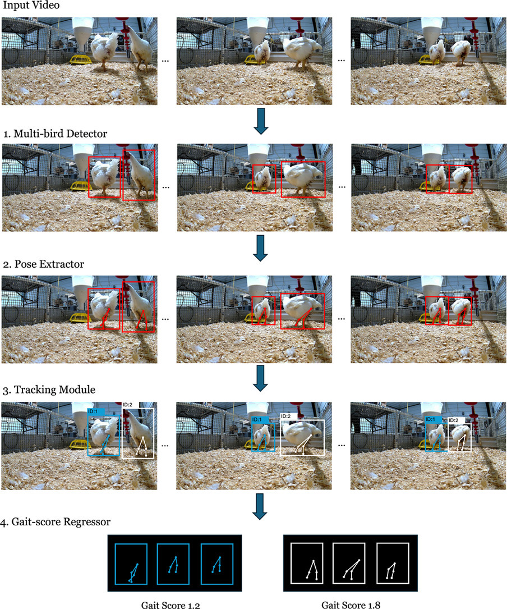
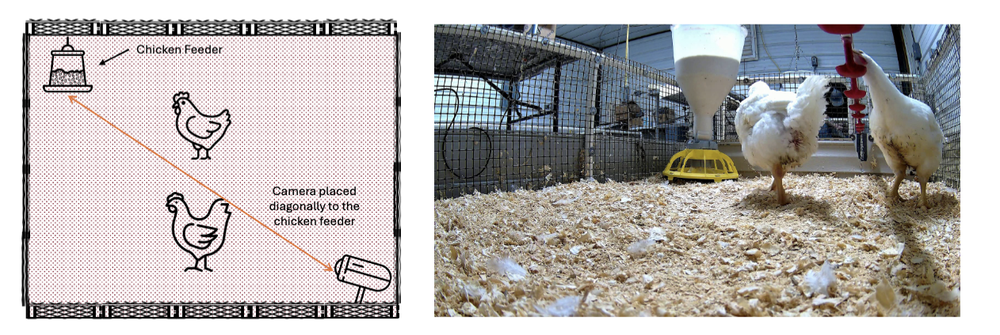
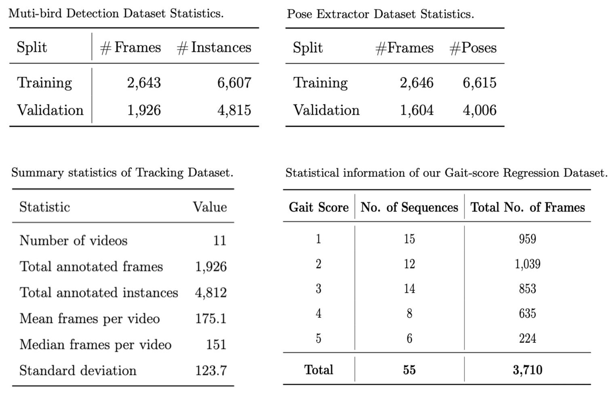
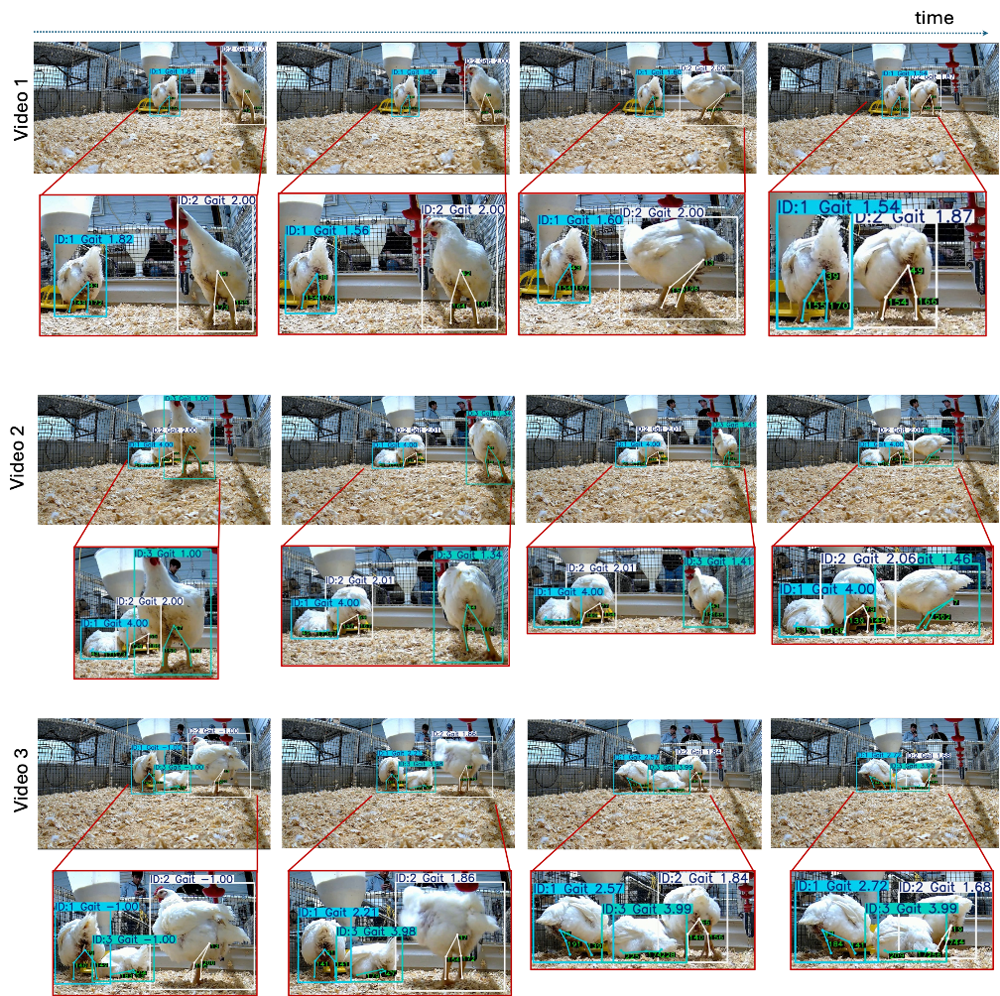
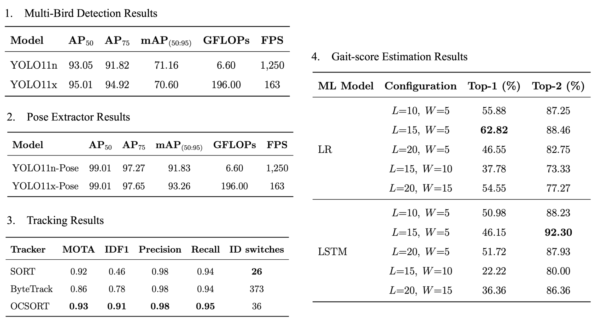

Broiler chicken production is a major agricultural industry, yet it faces persistent challenges related to animal welfare—most notably, lameness caused by selective breeding for rapid growth. Traditional gait assessment methods, such as Kestin’s scoring system, obstacle tests, and latency-to-lie, have been valuable but they are typically limited to single-bird evaluations in controlled environments, require trained personnel, and are slow due to their manual nature. In this work, we introduce MiGa, a multi-chicken gait assessment system that leverages computer vision and machine learning to automatically evaluate the gait of multiple birds simultaneously in more naturalistic settings. Our approach integrates four components: a multi-bird detector, a pose estimator, a tracking module, and a gait-score regressor. To support development and benchmarking, we introduce the GAIT dataset suite, which includes dedicated datasets for detection, pose extraction, tracking, and gait-score prediction. Experimental results demonstrate that MiGa achieves impressive gait scoring accuracy of 92% and detection processing speed of 30FPS. This system enables scalable, automated locomotion assessment in realistic multi-bird scenarios, contributing toward improved welfare monitoring in broiler production.
Video Demonstration
The demo shows simultaneous detection and tracking of multiple chickens, with each bird assigned a persistent identity. Leg keypoints and joint angles are estimated over time and used to predict an individual gait score as the chickens move through the scene.
Abstract
System overview

Experimental setup

Dataset statistics

Qualitative results

Quantitative results
The table 1 shows the Multi-Bird Detection Results where, YOLO11x achieves slightly higher AP50 and AP75 scores, YOLO11n demonstrates a superior overall mAP(50:95) and significantly better computational efficiency. Specifically, YOLO11n operates with only 6.6 GFLOPs and reaches a high inference speed of 1,250 FPS (Frame Per Second), compared to the 196.0 GFLOPs and 163 FPS of YOLO11x. Given this substantial difference in speed and efficiency, we select YOLO11n as the backbone detector in our system, as it best balances accuracy and runtime performance for real-time deployment.
The performance of the Pose Extractor is summarized in Table 2. While YOLO11x-Pose slightly surpasses in terms of mAP(50:95), the YOLO11n-Pose model achieves highly competitive performance with significantly lower computational cost. Notably, it retains a high accuracy of 91.83% mAP(50:95) and achieves 1,250 FPS with only 6.6 GFLOPs. Therefore, to maintain system efficiency without compromising performance, we choose YOLO11n-Keypoint as the backbone for our keypoint estimation module.

Table 4 compares the performance of conventional logistic regression (LR) and a recurrent LSTM model. A moderate temporal context (L=15) combined with a narrow stride (W =5) delivers the strongest single-label (Top-1) performance for LR at 62.82%. In contrast, the same configuration yields the highest Top-2 accuracy for the LSTM at 92.30%, indicating that the recurrent architecture more reliably ranks the correct class within the top two predictions—an attractive property when minor mis-ordering is acceptable in practice.
BibTeX
@article{tran2026miga,
title={MiGa: Multi-chicken gait assessment},
author={Tran, Minh and Manoharan, Annie Prasanna and Vang, Chiyou and Fernandes, Arthur FA and Breen, Vivian and Arango, Jesus and Kidd, Michael T and Le, Ngan},
journal={Smart Agricultural Technology},
volume={14},
pages={101933},
year={2026},
publisher={Elsevier}
}